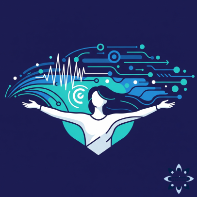
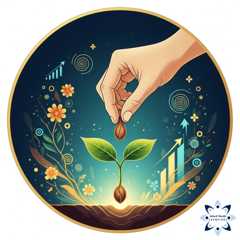
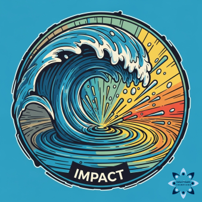
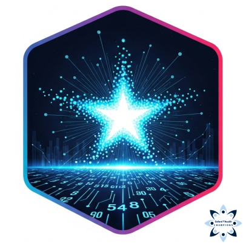

Science is a fundamentally communal activity, shaped by collaboration, shared knowledge, collective resources, and mutual accountability. Its strength lies in the diverse contributions of individuals and institutions working together toward common goals. The more open, inclusive, and cooperative the scientific process becomes, the more it benefits society as a whole. The Champions Programme is one of the projects in which Oxford iHealth is ensuring and engendering this inclusivity and cooperation in science.

The Oxford iHealth Champions Programme is for alumni of the MSc in International Health and Tropical Medicine at the University of Oxford. Specifically it is aimed for those who have taken the module on Open and Reproducible Science in R.
The programme is designed as a platform to support our alumni’s continuing learning journey on open and reproducible science - from knowledge acquisition, to real-word action, and then impact.
Knowledge
Upon their completion of the Open and Reproducible Science in R module and their MSc, the knowledge acquisition stage is completed and our alumni are inducted into the Champions Programme, awarded with the Oxford iHealth Champion badge and the Knowledge badge.
Action

Based on their own personal and professional aspirations, our Champions have the option to declare their intent and commitment to taking purposeful action in applying what they have learned to their personal and/or professional context. This can be through a documented discussion with mentors or a written plan of action detailing their ideas and the kind of support they would require to be able to realise them. This earns them the Oxford iHealth Action badge.
At this stage, our Champions can expect:
continued mentorship and technical support as they endeavour through your Champion’s journey towards realising their plans;
continued membership to Oxford iHealth’s GitHub organisational account which affords them access to some educational account benefits such as some compute time credits for GitHub Actions, continuous integration/continuous development, and workflow automation;
access to IHTM’s compute server which is aimed as a shared computing resource for IHTM alumni/iHealth Champions for projects/action plans that are computationally-intensive and/or requiring use of large language models (LLMs) for inference and some model training; and,
inclusion to Oxford iHealth’s community chat via Zulip from which they can keep up-to-date to community activities, seminars, and learning resources.

Impact
Finally, our Champions report back to evidence the impact of their actions. This demonstration of their impact can take many forms including, but not limited to, a publication or a report, a speaking engagement, and/or a public event in which our Champions present outcomes that were contributed to by their personal action plans. Accomplishing this earns our Champions the Oxford iHealth Impact badge.

Once our Champions have earned their Knowledge, Action, and Impact badges, they are then inducted as an Oxford iHealth Legend.
Lifelong journey
The entire learning journey is self-directed by our Champions based on their personal and professional contexts. There is no expectation of anyone to want or need to continue with the next stages. Our Champions decide if and when they want to pursue this process.
Onboarding
New Champions are inducted into the programme usually around the end of July to early August coinciding with the end of the current school year. They will receive their Knowledge Badge and Champions Badge via email along with an invitation to attend an online onboarding session where the mechanics of the programme will be discussed along with the kind of resources, support, and mentorship available.
Recognition
To track, document, and recognise our Champions’ efforts and achievements, we issue digital badges as described above. We use Open Badge Factory to create, issue, and manage the digital Open Badges we issue for our Champions. Once our Champions have achieved and/or submitted all the requirements for a badge and then verified by the iHealth team, they will receive an email confirming this achievement and issuing the respective badge/s they have earned. Our Champions can then manage their Open Badges using the Open Badge Passport via its web-based portal or through its mobile applications.